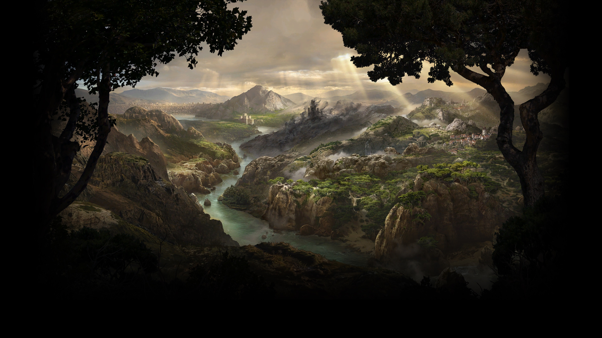
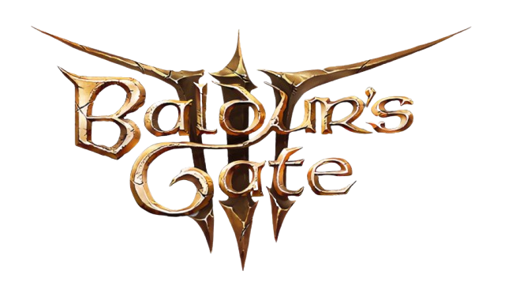
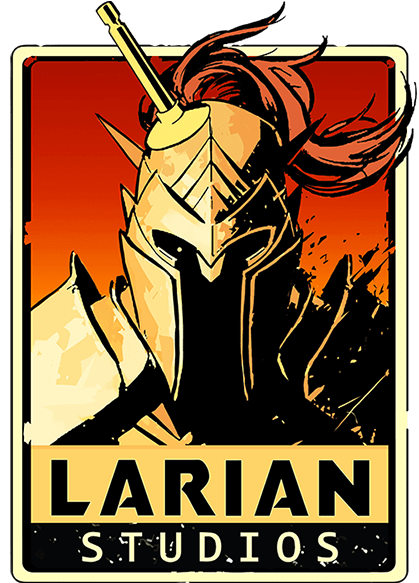

What is Baldur’s Gate 3?
Baldur's Gate 3 is a 2023 role-playing video game developed and published by Larian Studios. It is the third main installment to the Baldur's Gate series, based on the tabletop fantasy role-playing system of Dungeons & Dragons. A partial version of the game was released in early access format for macOS and Windows in October 2020. It remained in early access until its full release for Windows in August 2023, with versions for PlayStation 5, macOS, and Xbox Series X/S releasing later that year. One thing that has been acclaimed is the character design.
Baldur's Gate 3 gameplay:
Baldur’s Gate 3 has been developed by Larian studios
